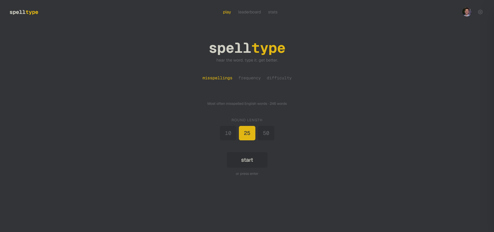
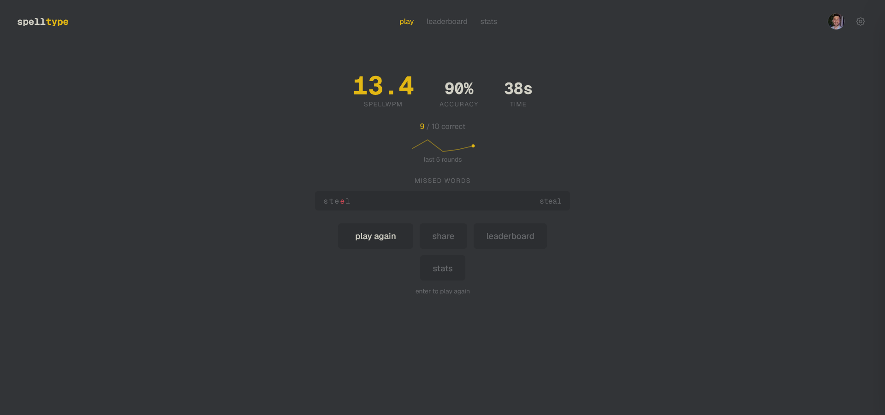
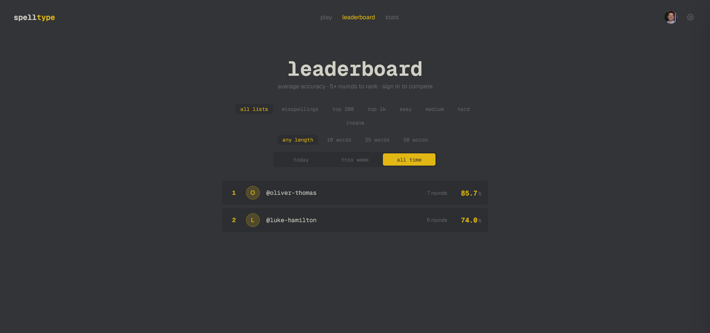

SpellType is an audio-first spelling trainer in the spirit of MonkeyType: it speaks a word, you type it, and you get per-letter feedback the instant you submit. Keyboard-first, minimal UI, a 3-2-1 countdown, and immediate results.
The rest of this page covers how it's built: the main engineering decisions and the tradeoffs behind them.

The core loop: hear the word, type it, get per-letter feedback.
The voice pipeline
Everything in the app hangs off words being read aloud clearly, instantly, at a speed the user sets. The first build nailed the audio quality and got everything around it wrong.
From live neural TTS to pre-rendered audio
Problemv1 ran a neural TTS model in-browser: ONNX over WebAssembly, ~400MB. Synthesis ran on the main thread, so every spoken word blocked rendering and janked the UI, on top of a punishing cold start.
ApproachMoved synthesis offline. A build-time Node script runs the same model once across all ~1,800 words and encodes them to MP3, shipped as static assets behind a manifest with the platform voice as fallback. Per-word speed is set at playback via HTMLAudio.playbackRate: one recording per word instead of re-synthesising for every speed.
OutcomeInstant, jank-free playback. The 400MB runtime dependency dropped to ~22MB of static files, with identical audio quality and the same speed control.

Round results, scored and validated server-side.
Engineering decisions
Reliable autoplay on mobile
ProblemiOS and Android only allow audio triggered by a user gesture. The first word plays after a 3-2-1 countdown, by which point the starting tap has expired, so the browser silently drops it.
ApproachUnlock a single persistent <audio> element inside the tap, then reuse that one element for every word in the session.
OutcomeThe countdown-delayed first word plays reliably on mobile, where per-word element creation fails silently.
Server-authoritative scoring
ProblemThe leaderboard is public, so any client-reported score is forgeable.
ApproachThe server recomputes every score from the answers and never trusts client values. Backed by DB-level rate limiting, same-origin CSRF protection, and a single projection layer every public response passes through, so private fields can't leak by accident.
OutcomeA trustworthy leaderboard and one place to reason about what's exposed.
Privacy-by-default social layer
ProblemLeaderboards and public profiles are an easy way to leak data users never meant to share.
ApproachEverything public is opt-in: a chosen handle, an avatar only if enabled. Per-word and per-answer data is never exposed.
OutcomeNothing surfaces that the user hasn't explicitly turned on.
SEO as distribution
ProblemA niche tool needs discovery beyond word of mouth.
ApproachStatically generate ~1,800 "how to spell X" pages, one per word, each with its own audio and a direct route into the game, plus generated sitemap.xml and robots.txt.
Outcome~1,800 indexable entry points, each useful on its own and each a path into the app.
Graceful degradation
ProblemA serverless app shouldn't break because the database is slow, exhausted, or unconfigured.
ApproachGuest mode carries the full core experience with no database at all, and DB access uses pooled connections sized for serverless Postgres.
OutcomeThe game keeps working when the backend doesn't, and connection limits hold under load.
Features
Audio-first loop with per-letter feedback and a 3-2-1 countdown
Word lists by category: common misspellings, frequency tiers, difficulty from easy to insane
Homophone hints that show the meaning, not the spelling, so they never give the answer away
Guest mode via localStorage, plus cloud sync when signed in
Accuracy-ranked leaderboard, public profiles, and a stats dashboard with charts
User-controlled playback speed and a browser-voice fallback
A flat amber-on-charcoal theme inspired by MonkeyType

The opt-in social layer: leaderboard, profiles, and stats.
A solo build, end to end. The work I care about most isn't on screen: pre-rendering the audio pipeline, server-authoritative scoring, and the privacy defaults that made the social layer safe to ship.